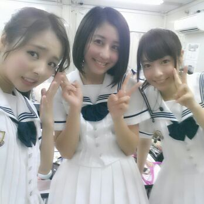
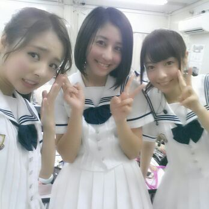

| 2013/10 02 Wed | 生まれて初めて 油そばを 食べたよ( ＾∀＾) ろっ てぃ- |
はいっ 皆おはよ(*´ω｀*)
Rottyだよん。
ピィィィス.V
からの真顔。

あのねー、
そろそろ衣替えがしたいなーって思っちゃうんだけど
まだちょっと早いかなぁー？
皆 いつ衣替えするー？
皆がしだした時に Rottyちゃんもする
(/*´・ω・)/
着なくなったお洋服とかあったら
メンバーにおさがりできるしねん.
最近はー、
まあやに ギンガムチェックのワンピース
だったり ひなちまに 帽子だったり...
あみにも、帽子あげたよん♪
皆 受け取ってくれてありがとねん(*´ω｀*)
ぴょん.
あのねー、台所の物入れの所見てたら
まひろが上京する時にもらった
高校で出会った友達からの手紙が出てきたの。
なんだか読んでたら嬉しくて涙が
ポロポロっとした (*・ω・)
『...何か いつもニコニコしてるから
しんどくないんかなぁ〜？っとか
思ったりもしてたけど...
真洋がそんな子とは思ってなかった。
私も色々あったけど
こんなに自分のことを打ち明けても
大丈夫って思ったのは真洋が初めて^^
真洋って何か 誤解されやすいタイプやと思うから、勘違いする子とかおると思う。...
だから 本間に信用できる子は
作れるだけ作っといた方が真洋が楽やと思うよ。...』
この手紙読んで
何か 表現しにくいけど、
出会って すぐのお別れだったなあ(´；ω；｀)って思った。
返事返す暇もなく東京へきたから
ちゃんと会ってありがとうって
言いたいな。って思いました(*^^*)
友達って大切な存在だよね！！
皆さんの 『宝物』って何ですかあ？
よしっ、 とゆ-ことで
Rottyちゃん今からお風呂にでも
入ろーかしら♪
ぢゃあ ち-ちゃん と ゆったんと
ばいばーい ＼(^o^)／

お休みなさい...のし
あのねー、台所の物入れの所見てたら
まひろが上京する時にもらった
高校で出会った友達からの手紙が出てきたの。
なんだか読んでたら嬉しくて涙が
ポロポロっとした (*・ω・)
『...何か いつもニコニコしてるから
しんどくないんかなぁ〜？っとか
思ったりもしてたけど...
真洋がそんな子とは思ってなかった。
私も色々あったけど
こんなに自分のことを打ち明けても
大丈夫って思ったのは真洋が初めて^^
真洋って何か 誤解されやすいタイプやと思うから、勘違いする子とかおると思う。...
だから 本間に信用できる子は
作れるだけ作っといた方が真洋が楽やと思うよ。...』
この手紙読んで
何か 表現しにくいけど、
出会って すぐのお別れだったなあ(´；ω；｀)って思った。
返事返す暇もなく東京へきたから
ちゃんと会ってありがとうって
言いたいな。って思いました(*^^*)
友達って大切な存在だよね！！
皆さんの 『宝物』って何ですかあ？
よしっ、 とゆ-ことで
Rottyちゃん今からお風呂にでも
入ろーかしら♪
ぢゃあ ち-ちゃん と ゆったんと
ばいばーい ＼(^o^)／

お休みなさい...のし
コメント(146)
2013/10/02 21:48